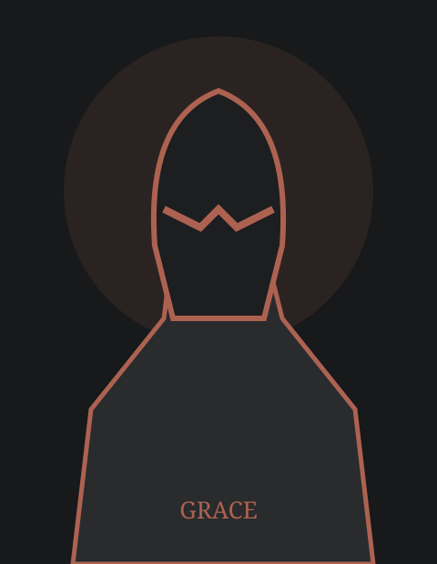
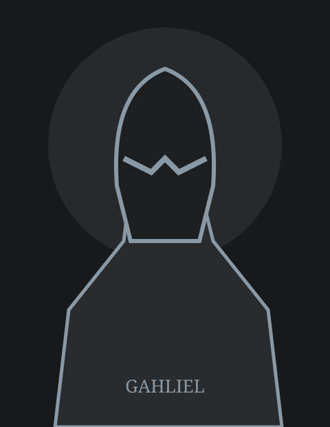
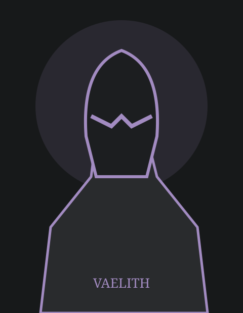

Os aventureiros O GRUPO

Grace Inagawa
Investigadora e combatente habilidosa. Chegou a Norba seguindo pistas sobre o massacre de seu clã e seu clã rival. Reconheceu símbolos que se conectam a seu passado.

Gahliel
Clérigo de postura firme, atento aos detalhes e ao perigo. Usa seu conhecimento e sua fé para proteger os companheiros, inclusive durante os combates no subterrâneo congelado.

Vaelith
Feiticeira que procura respostas sobre sua raça e sua origem. Seus poderes mágicos e seu familiar coruja foram decisivos nas batalhas contra as criaturas do gelo.